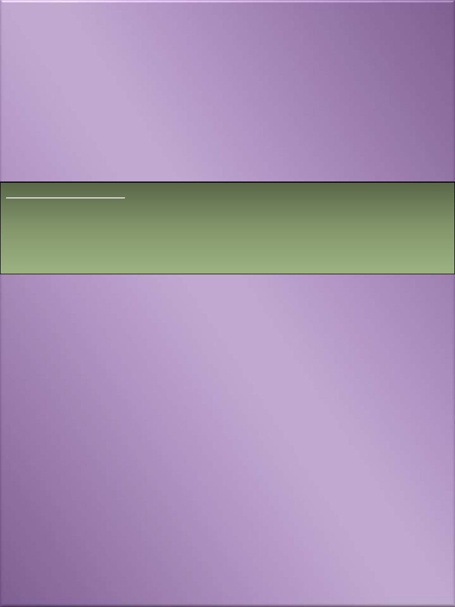

ঘুমাকনার আকে পড়কবন-
•
চার বার সূরা ফাতিহা পরকে ৪হাজার তিনাকরর ছিকা আমকে তেখা হকব।
•
তিন বার সূরা ইখেস পরকে এক খিম কুরআন পরার সওয়াব পাকব।
•
তিন বার িুরুি শরীফ পরকে জান্নাকির মূেয আিায় হকব।
•
চার বার ৩য় কাকেমা পরকে এক হকের সওয়াব পাকব।
•
১০বার ইসকিফা পরকে উভকয়র তববাি তমটাকনার সওয়াব পাকব।